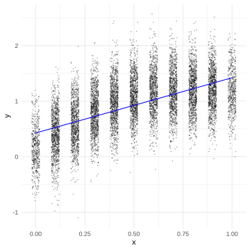
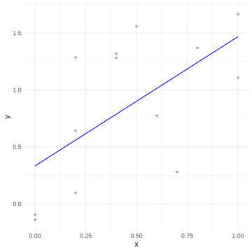
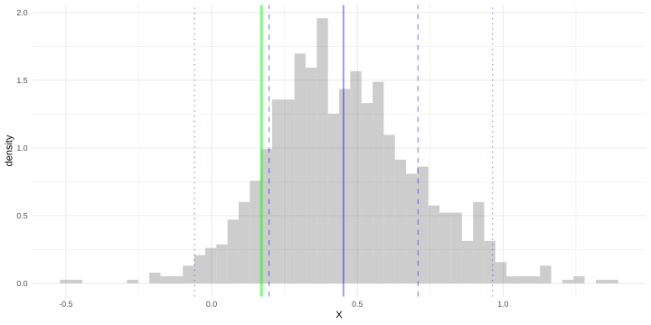
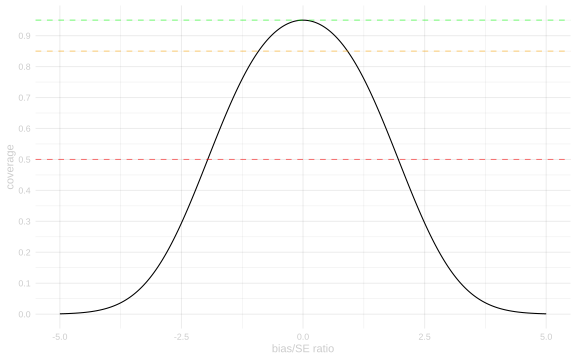
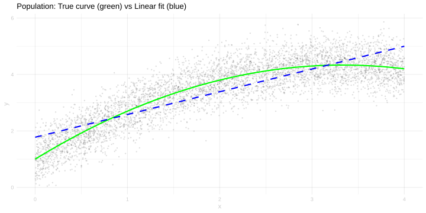
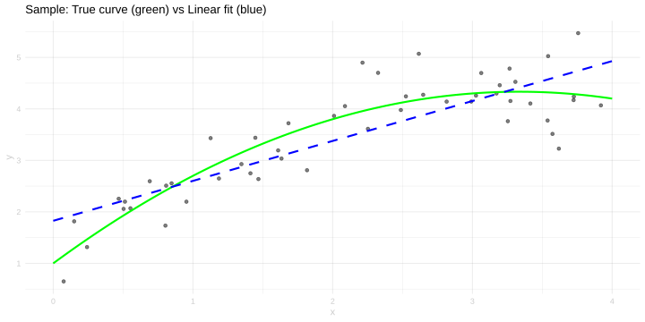

library(tidyverse)45 Homework: Misspecification and Bias
$$ \newcommand{X}{} \newcommand{Y}{}
$$
Introduction
In this homework, we focus on what happens when models are misspecified and how to reason about the impact of bias on inference. The key insight is that misspecification creates bias that doesn’t shrink with sample size, but our intervals do shrink—so more data can mean worse coverage.
As usual, we’ll use the tidyverse.
Misspecification and Coverage


Suppose we’re interested in estimating the subpopulation mean \(\mu(0) = \sum_{j:x_j=0} y_j / \sum_{j:x_j=0} 1\) of the population drawn on the left above. We’re working with a sample of \((X_1, Y_1), \ldots, (X_n, Y_n)\) drawn with replacement from this population, like the one drawn on the right above.
As our estimate of \(\mu(0)\), we use \(\hat\mu(0)\) where \(\hat\mu\) is the least squares line (the least squares predictor in the ‘lines model’ \(\mathcal{M}=\{m(w)=a+b w\}\)). Below is a plot of its sampling distribution at sample size \(n=13\). I’ve plotted its mean, mean plus or minus one standard deviation, and mean plus or minus two standard deviations as solid, dashed, and dotted blue lines respectively. I’ve also plotted the subpopulation mean \(\mu(0)\) itself as a green line.
You may assume that the standard deviation of the estimator at sample size \(n\) is \(\text{se}=\sigma/\sqrt{n}\) for some number \(\sigma\) that does not vary with sample size, just like it would be if \(\hat\mu(0)\) were the mean of a sample of size \(n\).

Solution
Locked (Week 13)
Solution
Locked (Week 13)
The Bias/SE Ratio and Coverage
What determines coverage when we have bias? The key quantity is the ratio of bias to standard error: \(\text{bias}/\text{se}\).
When our sampling distribution is approximately normal, coverage of the interval \(\hat\theta \pm 1.96 \times \text{se}\) is given by:
\[ \text{coverage} = \Phi(1.96 - \text{bias}/\text{se}) - \Phi(-1.96 - \text{bias}/\text{se}) \]
where \(\Phi\) is the standard normal CDF. We can write this as a function:
coverage.from.ratio = function(bias.over.se) {
pnorm(1.96 - bias.over.se) - pnorm(-1.96 - bias.over.se)
}Here’s a plot of coverage as a function of the bias/SE ratio:
ratios = seq(-5, 5, by=0.01)
coverages = coverage.from.ratio(ratios)
ggplot() +
geom_line(aes(x=ratios, y=coverages)) +
geom_hline(yintercept=0.95, linetype='dashed', color='green', alpha=0.5) +
geom_hline(yintercept=0.85, linetype='dashed', color='orange', alpha=0.5) +
geom_hline(yintercept=0.50, linetype='dashed', color='red', alpha=0.5) +
labs(x='bias/SE ratio', y='coverage') +
scale_y_continuous(breaks=seq(0, 1, by=0.1))
Key observations: - When bias/SE = 0, we get 95% coverage (by design) - When |bias/SE| ≈ 1, we get about 85% coverage - When |bias/SE| ≈ 2, we get about 50% coverage - When |bias/SE| > 3, coverage approaches 0
Solution
Locked (Week 13)
Solution
Locked (Week 13)
Visualizing Misspecification Bias
Let’s look at a concrete example of how model misspecification affects our estimates. Consider a population where the true relationship between \(x\) and \(y\) is nonlinear:
set.seed(42)
m = 5000
x = runif(m, 0, 4)
y = 1 + 2*x - 0.3*x^2 + rnorm(m, sd=0.5)
pop = data.frame(x=x, y=y)The true conditional mean function is \(\mu(x) = 1 + 2x - 0.3x^2\) (a downward-opening parabola). If we fit a linear model \(y = a + bx\), we get misspecification.
# Population with true curve
gridx = seq(0, 4, by=0.01)
true.curve = 1 + 2*gridx - 0.3*gridx^2
# Fit linear model to population
pop.linear = lm(y ~ x, data=pop)
linear.preds = predict(pop.linear, newdata=data.frame(x=gridx))
ggplot(pop) +
geom_point(aes(x=x, y=y), alpha=0.1, size=0.5) +
geom_line(aes(x=x, y=y), data=data.frame(x=gridx, y=true.curve), color='green', linewidth=1) +
geom_line(aes(x=x, y=y), data=data.frame(x=gridx, y=linear.preds), color='blue', linewidth=1, linetype='dashed') +
labs(title='Population: True curve (green) vs Linear fit (blue)')
# Sample and fit
n = 50
sam = pop[sample(1:m, n, replace=TRUE),]
sam.linear = lm(y ~ x, data=sam)
sam.preds = predict(sam.linear, newdata=data.frame(x=gridx))
ggplot(sam) +
geom_point(aes(x=x, y=y), alpha=0.5) +
geom_line(aes(x=x, y=y), data=data.frame(x=gridx, y=true.curve), color='green', linewidth=1) +
geom_line(aes(x=x, y=y), data=data.frame(x=gridx, y=sam.preds), color='blue', linewidth=1, linetype='dashed') +
labs(title='Sample: True curve (green) vs Linear fit (blue)')

Solution
Locked (Week 13)
Simulation Validity
When using simulations to check whether estimators work, we need to be careful that our simulations actually test the situations we care about. A simulation that shows good coverage doesn’t mean the estimator always has good coverage—it means the estimator has good coverage in that specific simulation scenario.
Solution
Locked (Week 13)
Solution
Locked (Week 13)
Summary
The key takeaways from this homework:
Misspecification creates fixed bias that doesn’t shrink with sample size, but our intervals do shrink. This means more data can mean worse coverage.
The bias/SE ratio determines coverage impact. A ratio of ~1 gives ~85% coverage; a ratio of ~2 gives ~50% coverage.
Be skeptical of simulation evidence. A simulation that shows an estimator works well only tells you it works in that specific scenario. Always consider what aspects of reality your simulation might be missing.